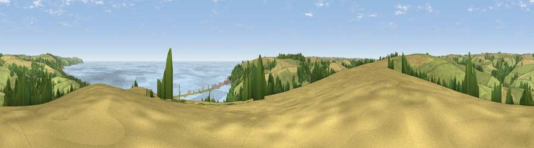

Viewpoint near Stokenham
#3126 in England · top 10% of its area beats it · near StokenhamWhere it is
The exact computed spot (SX 81575 43475). Click the marker for map links.
The view, rendered

A 360° render of this exact spot computed from the terrain model, tree cover and land cover — summer colours, afternoon light, calibrated against photographs of famous viewpoints. Real trees, hedges and buildings will differ in detail.
The panorama
Grey silhouette: terrain skyline in each direction (720 bearings, Earth curvature and refraction included). Dashed green: skyline with trees (+15 m) and buildings (+8 m) as obstacles. Blue strip: how far the ground is visible on each bearing.
Where the view opens
Wedge length = distance to the farthest visible ground on that bearing (vegetation-aware). Rings at 10, 25 and 50 km.
What fills the view
44% grassland · 26% water · 20% cropland · 9% woodland ·
Angular shares of the visible panorama (visual magnitude), not map area. Landscape diversity 0.57 (0–1 Shannon).
Key numbers
More beautiful places nearby
The staircase of upgrades: each row has a higher view potential than everything closer. Driving times are estimates from straight-line distance, calibrated against real road routing — check an actual route before setting out.
| Place | Direction | Drive | Score |
|---|---|---|---|
| Viewpoint near Torcross | S · 2 km | ~5 min | 76.2 |
| Viewpoint near Strete | NNE · 3 km | ~8 min | 76.5 |
| Viewpoint near Beesands | S · 3 km | ~8 min | 80.9 |
| Viewpoint near South Hallsands | S · 6 km | ~13 min | 81.2 |
| Viewpoint near South Hallsands | S · 6 km | ~13 min | 82.5 |
| Viewpoint near East Prawle | SW · 9 km | ~17 min | 83.3 |
| Viewpoint near East Prawle | SSW · 9 km | ~17 min | 84.6 |
| High Peak | NNE · 51 km | ~73 min | 85.3 |
50.27933, -3.66343 · source: screening · position refined by local search. Computed location — check access rights before visiting.